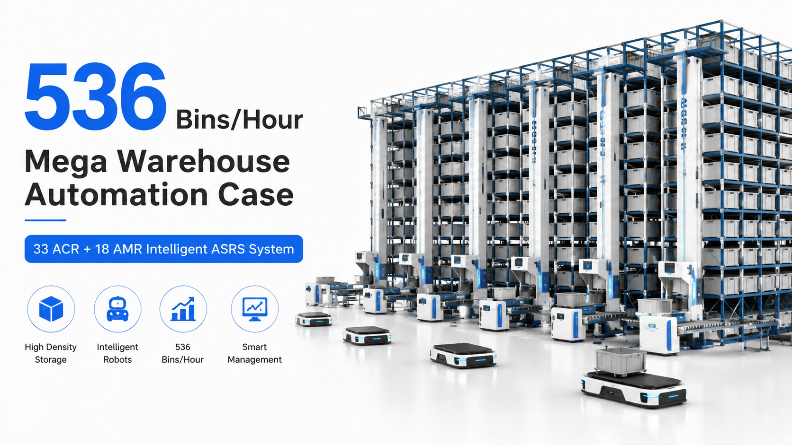

536 Bins/Hour Mega Warehouse Automation Case | 33 ACR + 18 AMR Intelligent ASRS System
This project demonstrates a next-generation high-throughput automated storage and retrieval system (ASRS) combining 33 ACR robots and 18 AMR robots. The system is designed for large-scale e-commerce and distribution environments where high SKU complexity, fast order fulfillment, and 24/7 operation are required. With a peak throughput of 536 bins per hour, this solution significantly improves warehouse efficiency while increasing storage density and reducing manual labor dependency.

Summary
This project demonstrates a next-generation high-throughput automated storage and retrieval system (ASRS) combining 33 ACR robots and 18 AMR robots.
The system is designed for large-scale e-commerce and distribution environments where high SKU complexity, fast order fulfillment, and 24/7 operation are required.
With a peak throughput of 536 bins per hour, this solution significantly improves warehouse efficiency while increasing storage density and reducing manual labor dependency.
Technology
- This mega warehouse system integrates multiple advanced automation technologies:
- 33 ACR (Autonomous Case/Carton Robots)
- 18 AMR (Autonomous Mobile Robots)
- Multi-aisle high-density racking system
- Intelligent WCS / WMS control system
- 3D SCADA warehouse visualization
- Dynamic task scheduling algorithm
- Automatic charging docking system
- Real-time inventory tracking system
- Multi-zone picking coordination
- High-speed conveyor integration
Challenge
Modern logistics and e-commerce warehouses face increasing operational pressure:
High SKU complexity (thousands of SKUs)
Rapid order fulfillment requirements
Labor shortage and rising labor costs
Inefficient manual picking operations
Warehouse space limitations
Order accuracy requirements
Traditional warehouse systems struggle to handle both high throughput and high density storage simultaneously.
Solution
This project implements a hybrid automation strategy combining ACR + AMR + intelligent control system.
Key advantages:
ACR robots handle high-density rack storage and retrieval
AMR robots manage flexible intra-warehouse transport
Intelligent system allocates tasks dynamically
Reduced human intervention in core operations
Fully scalable warehouse architecture
This hybrid model enables both high storage density and high operational flexibility.
Workflow & Layout
Step 1: Incoming Goods Reception
Goods are received and scanned into the system for identification and sorting.
Step 2: AMR Transport Allocation
AMR robots automatically transport goods to assigned warehouse zones.
Step 3: ACR Storage Operation
ACR robots perform:
Bin lifting
Deep rack storage
Automated slot assignment
Step 4: Intelligent Storage Management
System dynamically optimizes:
Storage location
Retrieval priority
Warehouse balancing
Step 5: Order Picking Execution
When orders are triggered:
ACR retrieves bins
AMR transports bins to packing zones
Step 6: Sorting & Packing
Goods are grouped and prepared for outbound shipment.
Step 7: Dispatch & Outbound
Finished orders are sent to shipping zones automatically.
Results & ROI
- Key Performance Results:
- Throughput: 536 bins/hour
- Storage capacity: 46
- 000 bins
- Warehouse area: 4
- 100 sqm
- Storage efficiency improvement: +40%
- Space utilization improvement: +15% (dual-deep design)
- Operational Benefits:
- 24/7 continuous operation
- Fully automated charging system
- Reduced labor dependency by up to 70%
- Higher order accuracy
- Faster order fulfillment cycles
- ROI Estimate:
- Typical ROI period:
- 18–36 months depending on throughput utilization
Equipment List
- Core system equipment includes:
- 33 ACR intelligent storage robots
- 18 AMR transport robots
- Multi-layer racking system
- Conveyor buffer zones
- Automatic charging stations
- Warehouse control system (WCS)
- Warehouse management system (WMS)
- SCADA visualization platform
- Safety scanning system
- High-speed sorting modules
Project Overview / Opening
This project represents a new generation of intelligent warehouse automation systems.
Unlike traditional ASRS systems that focus only on storage density, this solution integrates robotic mobility, dynamic scheduling, and real-time warehouse intelligence to maximize both efficiency and scalability.
It is designed for high-demand logistics environments where speed, accuracy, and flexibility are equally important.
Key Points
- 1️⃣ High Throughput Performance
- The system achieves 536 bins/hour, enabling fast order processing for large-scale operations.
- 2️⃣ Hybrid Robot Architecture
- ACR handles vertical + rack storage
- AMR handles horizontal transportation
- This separation improves efficiency and reduces system bottlenecks.
- 3️⃣ High Storage Density
- 46,000 bin capacity
- Dual-deep rack design increases density by 15%
- 4️⃣ Smart Warehouse Intelligence
- 3D SCADA system enables:
- Real-time monitoring
- System visualization
- Predictive scheduling
- 5️⃣ 24/7 Autonomous Operation
- With automatic charging systems, robots operate continuously without downtime.
Implementation / Workflow
Phase 1: System Design (2–4 weeks)
Warehouse layout + robot allocation planning
Phase 2: Manufacturing (6–10 weeks)
Racking system + robot production
Phase 3: Software Integration (3–6 weeks)
WMS + WCS + SCADA system integration
Phase 4: Installation (2–4 weeks)
On-site assembly and system setup
Phase 5: Commissioning (1–2 weeks)
Testing, optimization, and go-live support
Customer Value / Results
Operational Value:
Higher warehouse throughput
Reduced human labor dependency
Faster order fulfillment
Improved accuracy and traceability
Continuous 24/7 operation capability
Strategic Value:
Scalable warehouse architecture
Future-ready automation system
Multi-warehouse coordination capability
Reduced operational risk
Financial Value:
Lower long-term labor cost
Higher warehouse utilization efficiency
Faster ROI through throughput optimization
Conclusion / Next Step
This 33 ACR + 18 AMR mega warehouse system demonstrates how modern logistics operations can achieve high throughput, high density, and full automation simultaneously.
It is especially suitable for:
E-commerce fulfillment centers
Third-party logistics (3PL)
Large distribution hubs
High SKU complexity warehouses
Before designing a similar system, key factors must be evaluated:
✓ Warehouse size and structure
✓ SKU quantity and turnover rate
✓ Throughput requirement
✓ Automation level
✓ Expansion strategy
If you are planning a smart warehouse or ASRS automation project, we can help you design the system, simulate throughput, and estimate total investment.
SEO Title
536 Bins/Hour Mega Warehouse Automation Case | 33 ACR + 18 AMR Intelligent ASRS System
SEO Description
This project demonstrates a next-generation high-throughput automated storage and retrieval system (ASRS) combining 33 ACR robots and 18 AMR robots.
The system is designed for large-scale e-commerce and distribution environments where high SKU complexity, fast order fulfillment, and 24/7 operation are required.
With a peak throughput of 536 bins per hour, this solution significantly improves warehouse efficiency while increasing storage density and reducing manual labor dependency.
Related Blog
Start with Your Business Challenge
Tell us about your warehouse, factory, or production requirements. We'll help you explore practical automation solutions and relevant project references.